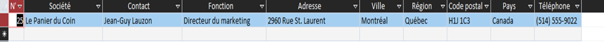

L’objectif de cette mission est de commencer à exploiter la base de données de
l’entreprise KDou pour pouvoir par la suite avoir des analyses et indicateurs pertinents. On
souhaite faire des requêtes avec le logiciel Low Code Access.
Présentation d'indicateurs :
Enoncé :
On voudrait des informations sur Jean-Guy Lauzon. C’est un fournisseur.
Interprétation :
On doit donner toutes les informations qu’on peut avoir sur Jean-Guy
Lauzon
Résultat :

Code SQL :
SELECT *
FROM Fournisseur AS F
WHERE F.Contact = "Jean-Guy Lauzon"
ORDER BY 1;
Enoncé :
On veut vérifier les coordonnées des clients parisiens : en donner une liste
triée par société.
Interprétation :
Cette requête permet d’obtenir la liste des clients habitant à Paris, afin de contrôler
leurs coordonnées (adresse, téléphone, email…). Le tri par société facilite la lecture.
Résultat :
Code SQL :
SELECT Clientele.CodeCli, Clientele.Societe, Clientele.Contact, Clientele.Adresse,
Clientele.Ville, Clientele.CodePostal, Clientele.Pays, Clientele.Tel, Clientele.MailCli AS
Mail_Client
FROM Clientele
WHERE Clientele.Ville="Paris"
ORDER BY 2;
Enoncé :
Quels fournisseurs proposent de la viande et du poisson ?
Interprétation :
Cette requête permet de trouver les fournisseurs qui travaillent dans
ces deux catégories. On fait une première requête où on sélectionne les
fournisseurs qui proposent de la viande et on fait une deuxième requête où on
sélectionne ceux qui proposent du poisson. On fait ensuite une jointure interne entre
les deux requêtes.
Résultat :
Société
Contact
Pays
Sakura Imports
Yoshi Nagase
Japon
Code SQL :
SELECT R1.Societe, R1.Contact, R1.Pays
FROM (
SELECT F.Societe, F.Contact, F.Pays
FROM Fournisseur AS F INNER JOIN ( Categorie AS C
INNER JOIN Produit AS P
ON C.CodeCateg = P.CodeCateg ) ON F.NoFour = P.NoFour
WHERE C.NomCateg = "Viandes"
ORDER BY 1
) AS R1
INNER JOIN (
SELECT F.Societe, F.Contact, F.Pays
FROM Fournisseur AS F INNER JOIN ( Categorie AS C
INNER JOIN Produit AS P
ON C.CodeCateg = P.CodeCateg )
ON F.NoFour = P.NoFour
WHERE C.NomCateg LIKE "Poisson*"
ORDER BY 1
) AS R2 ON R1.Societe = R2.Societe
ORDER BY 1;